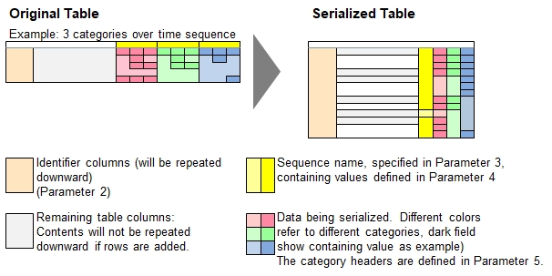

Function Names
table serialize, table serialize all, table serialize ignore zeroDescription
This is a pivot function which moves horizontally spread data (typically looking like schedules across timelines, or other tables with horizontally spread categories)
to a sequential listing with one affected data item per row.
table serialize all will do a full serialization of the table, including all blank fields
table serialize only serialize non-blank fields in order to avoid generating unnecessary rows.
serialize ignore zero will also skip serializing fiels representing zero. Values such as 0, -0, ., 0.0, .00 are also considered 0, but '0 EUR' is not (text inside).

Hint:The opposite action of table serialize is to use table spread() to spread the data horizontally
and then apply table consolidate() to reduce the nubmer of rows to the minimum necessary.
Call as: procedure or function
Restrictions
Indirect parameter passing is disabled
Parameter count
5-6
Parameters
| No. | Type | Description | |||||||||||||||
|---|---|---|---|---|---|---|---|---|---|---|---|---|---|---|---|---|---|
| 1. input |
literal | Name of existing table | |||||||||||||||
| 2. input |
table columns | Identifier columns to repeat Specifies all columns which data shall be replicated downwards for all corresponding data being serialized.
This is useful for identifiers and descriptions related to the serialized values so meanings are given to every row.
It is not recommended to include columns containing numbers which need to be added up (or used in a similar way) at a later time because the serialization would affect the final result.
Even if you want an easily readable table (e.g. describe once, keep following rows blank), then do not include this header.
| |||||||||||||||
| 3. input |
table column | Column for sequence names Assign a meaningful sequence name. Naming examples:
| |||||||||||||||
| 4. input |
parameter set containing literals | Sequence names These values will be applied as data entries under the column which header name is specified in the 2nd parameter. Examples:
| |||||||||||||||
| 5. input |
table columns | Category names Categories related to the data in the original table Examples
| |||||||||||||||
| Opt 6. input |
literal | Original header template This literal depicts the first example how the original header looks like where it must contain the word "[Sequence]" and (optionally if only 1 category
name provided, otherwise mandatory), the word "[Category]". "Sequence" and "Category" are case sensitive.
The function will actually look for these headers and expects that each of them sequence names and Category names will be mentioned at least once. Sufficient example for quarters / 3 Category names:
Not sufficient example:
The 6th parameter is not required if only 1 category name is specified. In this case, the function looks for column names equaling to the sequence names, e.g. "2018", "2019", "Q1", "Q2", "AT", "BE" related to the various examples above. |
Return value
| Type | Description |
|---|---|
| numeral | Column count Number of columns found with header names comprised of values in 4th, 5th and 6th parameters. |
Exceptions
0 Sequence and/ or 0 category names provided
No columns with data to spread have been found.
Examples
// An easy one
table initialize( bils, // Swedisch for 'cars', aka 'automo-bils'
{ { Product, "2020-Q1".."2020-Q4" },
{ Sedans, 24, 34, 44, 14 },
{ Pickpus, 11, 21, 31, 21 },
{ Cabrios, '', 5, 10, '' },
{ SUVs, 35, 25, 45, 55 } } );
echo("Car sales in sequential order (including blanks here):");
table serialize all( bils, Product, Quarter, { "2020-Q1".."2020-Q4" }, Cars sold );
table list ( bils );
// Serializing order intake (OI) and revenues (Rev) over quarters
table initialize( kpi, // Key Performance Indicators
{ { Region, "OI 2018", "Rev 2018", "OI 2019", "Rev 2019", "OI 2020", "Rev 2020" },
{ Americas, 1000, 950, 1100, 1050, 1200, 1150 },
{ Europe, 800, 700, 900, 950, 1100, 1050 },
{ Antarctica, '', '', 0, 0, 20, 15 } } );
echo;
echo("Key performance indicator values (excluding blanks and zero:");
table serialize ignore zero( kpi, Region, Year, { "2018".."2020" },
{ OI, Rev }, "[Category] [Sequence]" );
table list ( kpi );
Output
Car sales in sequential order (including blanks here):
0 : Product | Quarter | Cars sold
1 : Sedans | 2020-Q1 | 24
2 : Sedans | 2020-Q2 | 34
3 : Sedans | 2020-Q3 | 44
4 : Sedans | 2020-Q4 | 14
5 : Pickpus | 2020-Q1 | 11
6 : Pickpus | 2020-Q2 | 21
7 : Pickpus | 2020-Q3 | 31
8 : Pickpus | 2020-Q4 | 21
9 : Cabrios | 2020-Q1 |
10 : Cabrios | 2020-Q2 | 5
11 : Cabrios | 2020-Q3 | 10
12 : Cabrios | 2020-Q4 |
13 : SUVs | 2020-Q1 | 35
14 : SUVs | 2020-Q2 | 25
15 : SUVs | 2020-Q3 | 45
16 : SUVs | 2020-Q4 | 55
Key performance indicator values (excluding blanks and zero:
0 : Region | Year | OI | Rev
1 : Americas | 2018 | 1000 | 950
2 : Americas | 2019 | 1100 | 1050
3 : Americas | 2020 | 1200 | 1150
4 : Europe | 2018 | 800 | 700
5 : Europe | 2019 | 900 | 950
6 : Europe | 2020 | 1100 | 1050
7 : Antarctica | 2020 | 20 | 15